Grasshopper Design!

For this assignment, the objective was to use grasshopper to parametrically design two different types of objects to be 3D printed.
For this assignment, the objective was to use grasshopper to parametrically design two different types of objects to be 3D printed.

For the first object, we were to design a nested object in grasshopper that can be printed in place and taken apart upon printing it.
I wanted to create plates that nest similar to the way chips and salsa are served, but since the assignment required it to be three items, I added an extra bowl that maybe you can put other toppings on, like olives or some sour cream. Imagination required.
With help from the class tutorial, I first created the oval curve in Rhino and used that as the geometry component in Grasshopper as the geometry component of an array that scaled in place. I used an xyz vector, array, series and scale component to do that
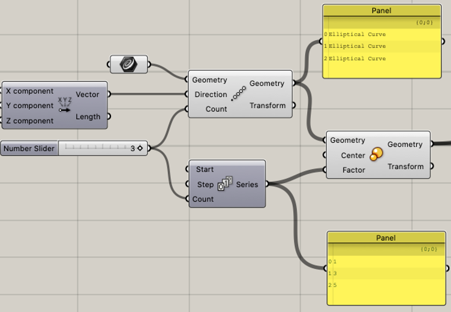Then I offset the curves in order to make the wall thickness, they were originally offsetting inwards, so I had to make the value negative to do what I wanted it to do. This became necessary when I created the bottom boundary layer to define the bottom of each bowl, because if it was inside it wouldn’t be attached to both the inner and outer walls. Then I performed a graft on a merge component in order to create a surface in between the original curve and its corresponding offset that would later be extruded.
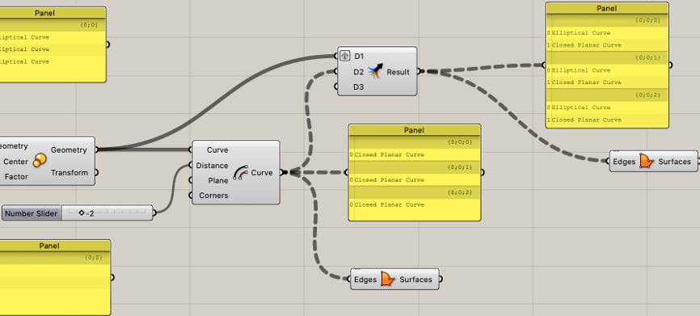I used just a general extrude on the walls and I tried to mess around with cosine to make the walls flare outward, but I couldn’t get that to work because they would always flare in the same direction. I reached out to the class and was given the idea to use the taper function, so I messed around with that a bit, the function was super sensitive so the difference between the start and the end are .1. I specifically wanted the taper to be extremely subtle because otherwise the print might require support and I don’t have time to wait for that.
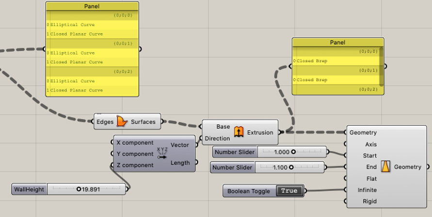Once it was done, I realized the bowls needed some space in between them in order to properly be able to print in place and be able to be disassembled. I was really helpful to be using grasshopper at this point because all I had to do was define a Z component in the vector that defined the array and everything else followed suit.
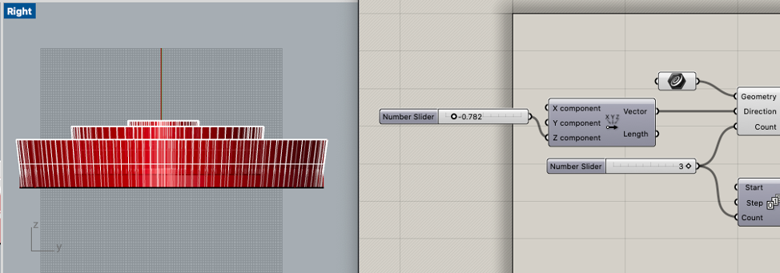Then I baked the bottom layer boundary surfaces and the tapered walls. I needed to do some clean up in rhino because the surfaces created got a little warped from the taper/ baking. I deleted the old surface and created a new plane from the poly surface and performed an extrude curve and offset plane from that.
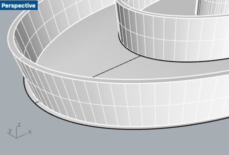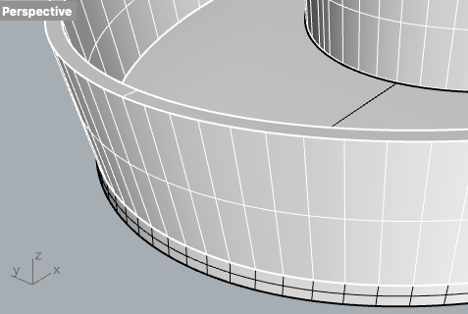There was a similar issue with the second bowl but on such a minor level I decided not to delete because with tolerances that might not matter anyways, plus I am curious to see what happens
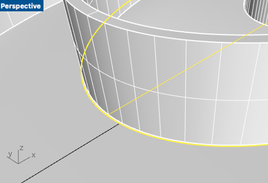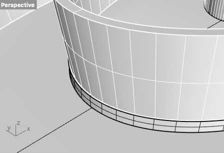For the inner bowl, there was less space in between the smallest bowl and the second, this is because of the z direction offset for the array was affected by the scale. I intentionally want to leave space between the bowls so that Cura can generate structure that I can rip out. Extruding this downward, I run the risk of making that structure so close to the solids it might be difficult to detach, so the bottom of this bowl (unlike the others) was extruded upwards to try and alleviate that risk.
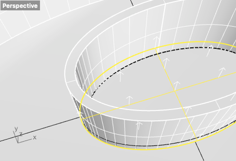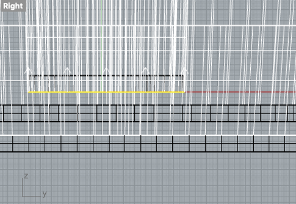I performed a Boolean union on each of the bowls independently then I exported as an STL. In Cura it imported off the bad and pretty large, so I needed to move and scale it to about 75% of the original file.
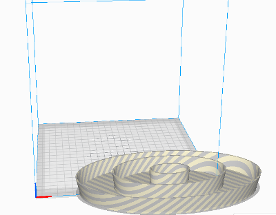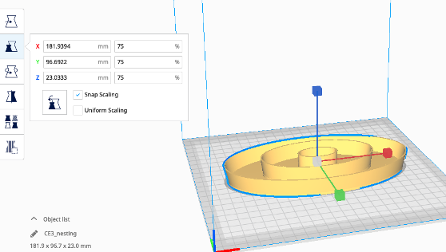Upon preview, it does look like there will be sufficient support structure to be able to detach each bowl which is good.
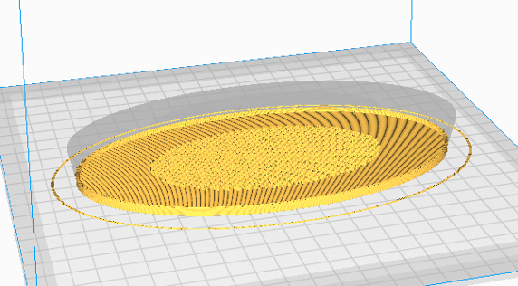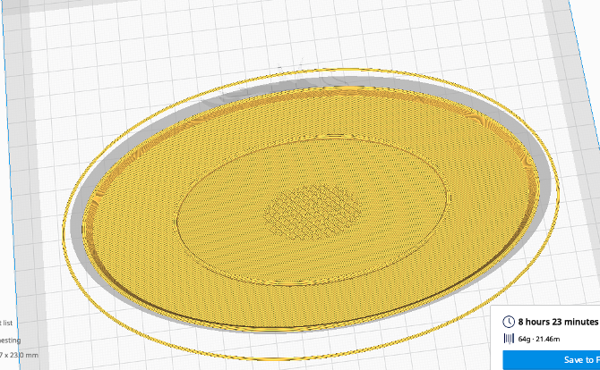The print is going to take a little over 8 hours which is currently in progress…
Files:
For the second object, the idea was to design and print clips that would hold multiple pieces of cardboard together. The idea was that the design can be easily manipulated in rhino such that the different tolerances required to effectively hold the different carboards together can be changed quickly with a value change in grasshopper.
This assignment was interesting because I actually use a bunch of cardboard boxes to keep my 6-month-old dog from going up or down stairs since he isn’t very fond of them. As he’s gotten bigger, we’ve needed to add more to the barricade so these might actually be very useful for keeping those together.
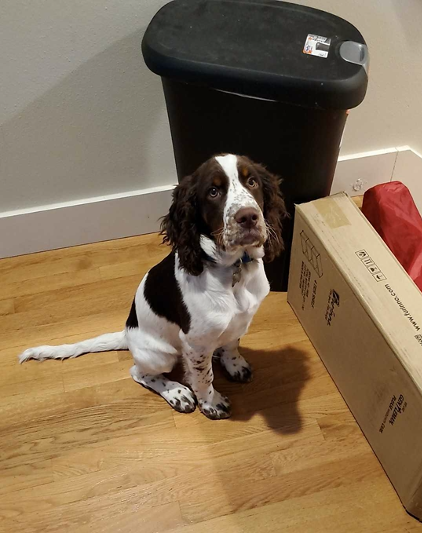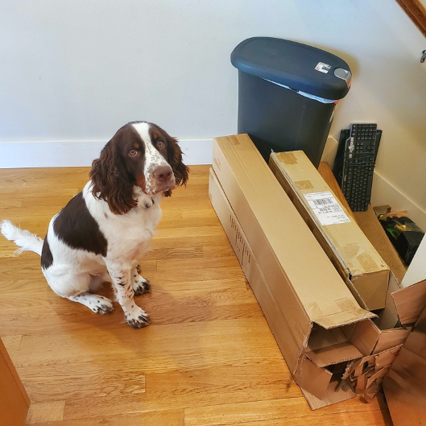The first three boxes I wanted to focus on were those from the barricade. Those will have 3 places to “pinch” together. Those will be the two squares together, then each square to the rectangle. I took two measurements, one estimation of the actual thickness, and one of it really smushed so that I am acquiring some information of min and max thicknesses required.
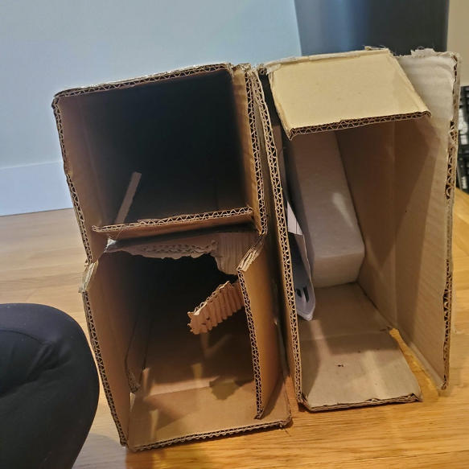Max and min between the two squares ~21-28 mm:
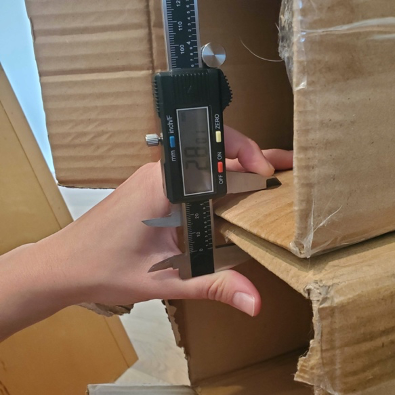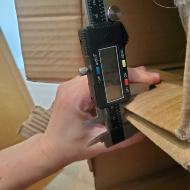Max and min between top square and rectangle ~22-27 mm:
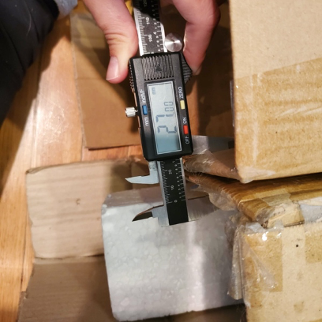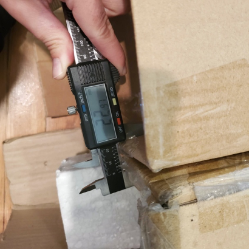Max and min between bottom square and rectangle ~21-26 mm:
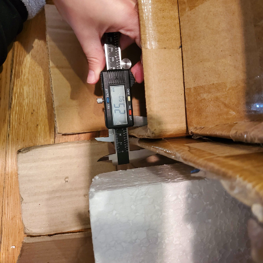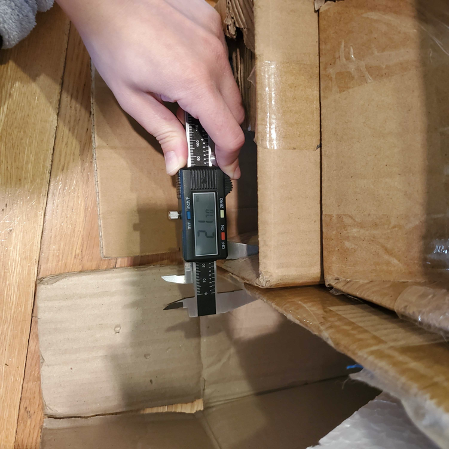This design took a back burner to the nested object print so video is still in work…
Files (under construction):